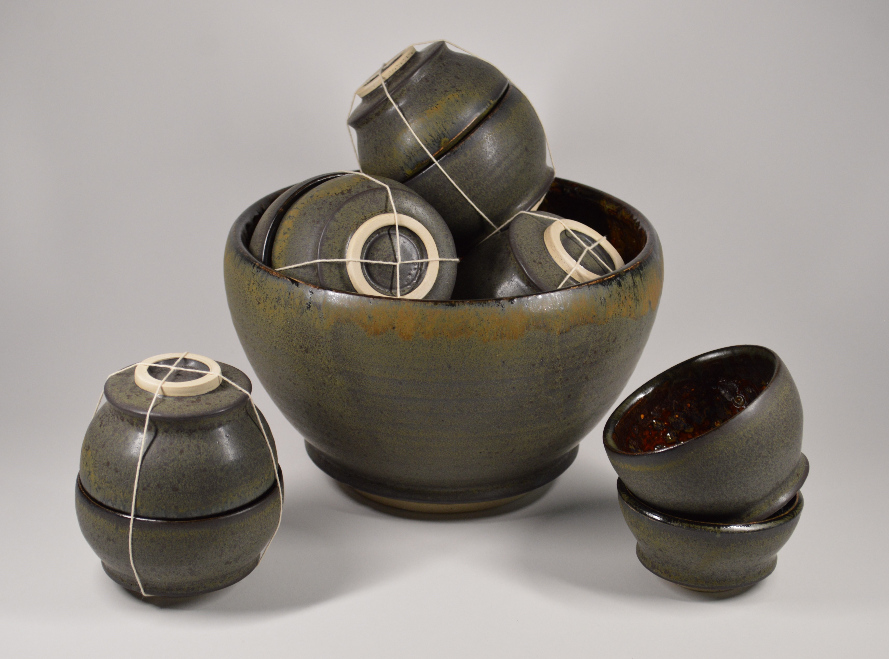

About
Tehara Devi
Tehara Devi is a ceramic artist whose work explores form, structure, and surface through hand-built processes.
Each piece reflects a balance between control and material response, allowing the clay, glaze, and firing to shape the final outcome.
The work emphasizes weight, geometry, and subtle variation in texture, creating objects that feel both intentional and organic.
Tehara is based in New York City.
